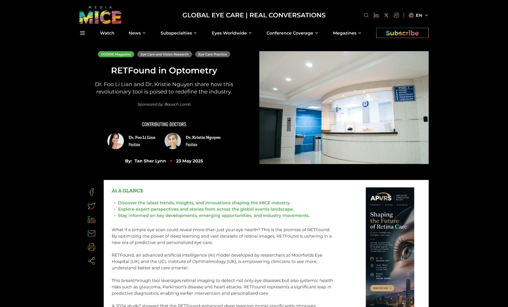

03
Article Details
A focused reading layout: category, contributors, publication details, and supporting imagery arranged in a clear editorial structure, an "At a Glance" summary up front, and a measured column width that keeps long-form medical writing readable.
